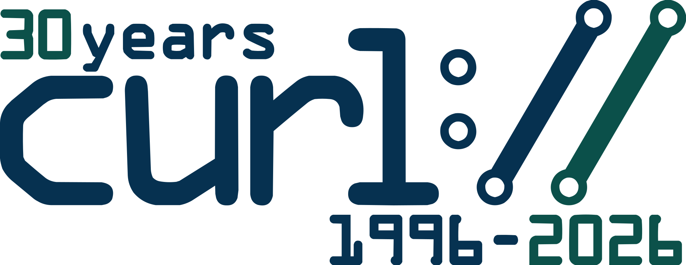
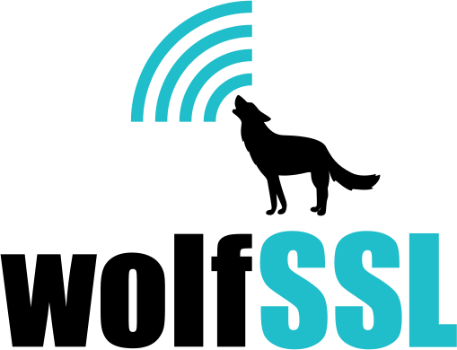
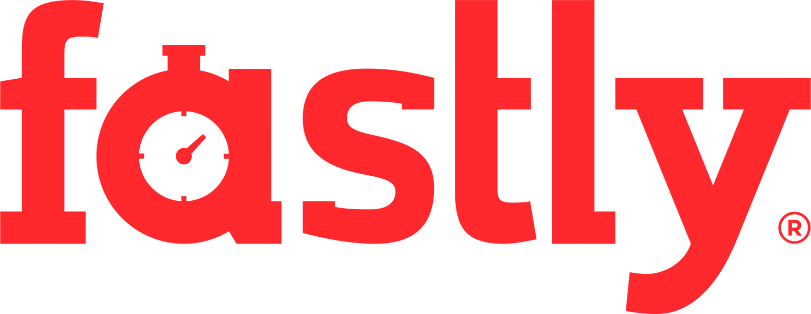
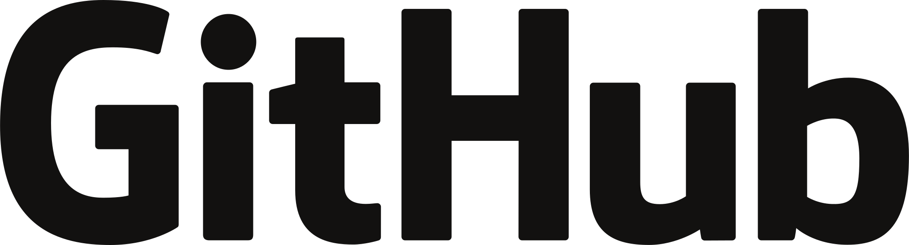

command line tool and library for transferring data with URLs



What is curl used for?
curl is used in command lines or scripts to transfer data. curl is also libcurl, used in cars, television sets, routers, printers, audio equipment, mobile phones, tablets, medical devices, settop boxes, computer games, media players and is the Internet transfer engine for countless software applications in over twenty billion installations.
curl is used daily by virtually every Internet-using human on the globe.
curl supports
| Protocols | DICT, FILE, FTP, FTPS, GOPHER, GOPHERS, HTTP, HTTPS, IMAP, IMAPS, LDAP, LDAPS, MQTT, MQTTS, POP3, POP3S, RTSP, SCP, SFTP, SMB, SMBS, SMTP, SMTPS, TELNET, TFTP, WS, WSS |
| Proxies | SOCKS4, SOCKS5, HTTP, HTTPS (HTTP/1 and HTTP/2), tunneling, via unix domain sockets, haproxy, SOCKS+HTTP proxy chain |
| HTTP | GET, POST, PUT, HEAD, multipart formpost, HTTP/0.9, HTTP/1.0, HTTP/1.1, HTTP/2 (h2c, h2, prior knowledge), HTTP/3 (dual connect h1/h2 + h3 or h3-only), HSTS, Alt-Svc, cookies, PSL, etags, transfer compression, ranges, custom headers, custom method, follow redirects |
| FTP | IPv6 (EPRT, EPSV), STLS, upload/download, append, range, passive/active, kerberos, directory listing, custom commands |
| SCP + SFTP | known hosts, md5/sha256 fingerprint, compression, upload/download, directory listing |
| TLS | 1.0 - 1.3, mutual authentication, STARTTLS, OCSP stapling, ECH, False Start, key pinning, PQC ready, session resumption, early data, export/import sessions |
| QUIC | 0RTT handshakes |
| Auth | Basic, Plain, Digest, CRAM-MD5, SCRAM-SHA, NTLM, Negotiate, Kerberos, Bearer tokens, AWS Sigv4, SASL, .netrc |
| HTTP compression | gzip, brotli and zstd |
| Name resolving | DNS-over-HTTPS, custom address for host, name+port redirect, custom DNS servers, DNS caching, HTTPS RR |
| Connection | connection reuse, Interface binding, Happy Eyeballs, IPv4/IPv6-only, unix domain sockets, TCP keepalive, TCP Fast Open, TCP Nodelay, MPTCP, VLAN priority, IP Type Of Service |
| Transfers | transfer rate limiting, request rate limiting, stall detection, retries, timeouts |
| URLs | Unlimited amount, parallel and serial transfers, globbing |
| Output | IDN hostnames, custom info from transfer, metadata as JSON, per content-disposition, libcurl source code, bold headers |
Who makes curl?
curl is free and open source software and exists thanks to thousands of contributors and our awesome sponsors. The curl project follows well established open source best practices. You too can help us improve!
What is the latest curl?
The most recent stable version is 8.22.0, released on 2026-09-02. Currently, 76 of the listed downloads are of the latest version.
Where is the code?
Check out the latest source code from GitHub.